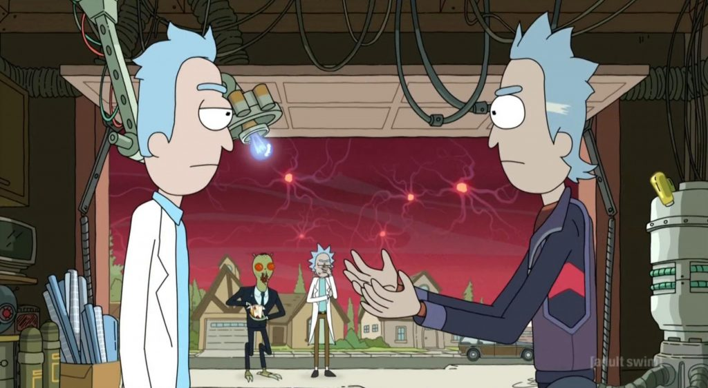
EXPLORAR TEMPORADAS
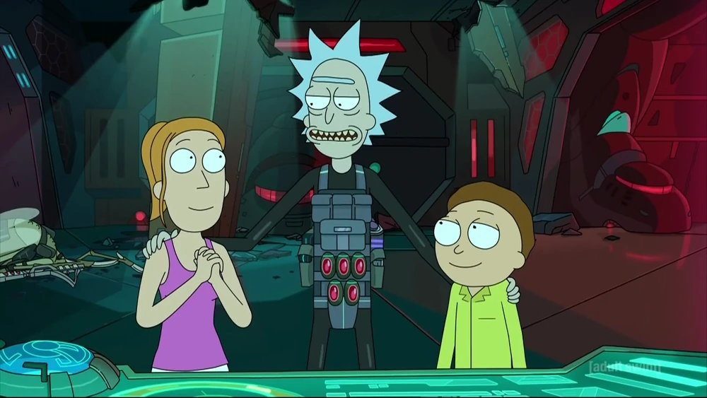
Rick cria um plano de fuga da prisão galáctica. Na Terra, que está sob controle federal, Morty e Summer discutem sobre o avô.
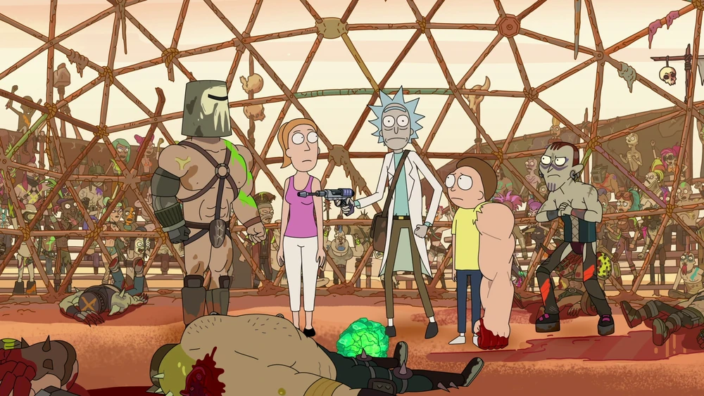
Os filhos enfrentam o divórcio dos pais. Rick os leva para um universo como Mad Max, onde ele procura roubar um cristal de um grupo de traficantes.
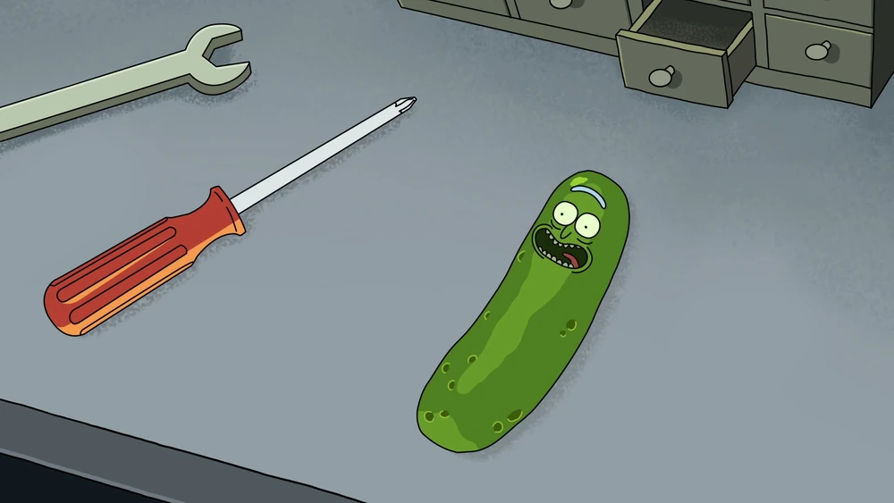
Rick transforma a si mesmo em um pepino enquanto Beth, Summer e Morty vão à terapia familiar.
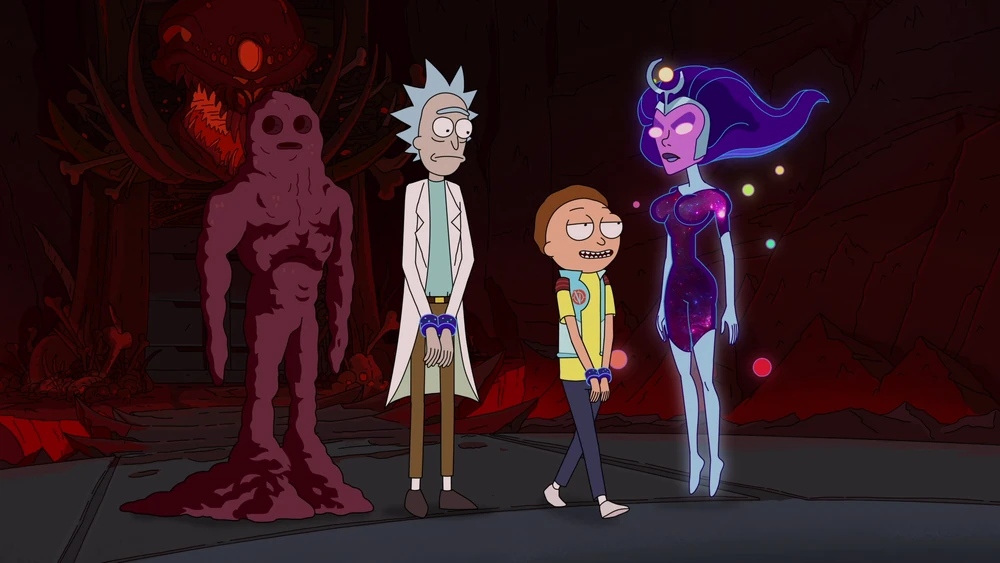
4. Vindicators 3: The Return of Worldender
22min • 13/08/2017/p> Assistir
Rick e Morty são convocados pelos Vindicators para parar os Worldender, mas acabam em uma armadilha mortal concebida pelo Rick bêbado.
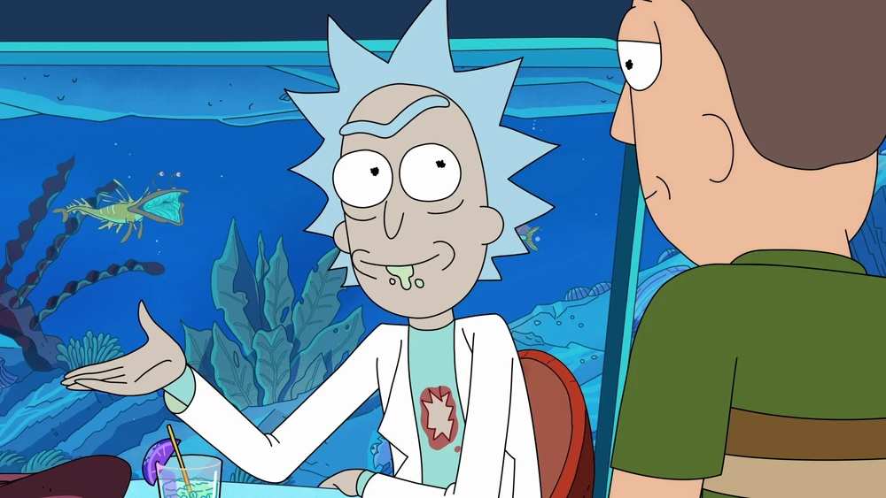
Rick leva Jerry em uma aventura em um resort onde todos são imortais por estarem lá. Jerry conhece alguns conhecidos de Rick que querem vingança.
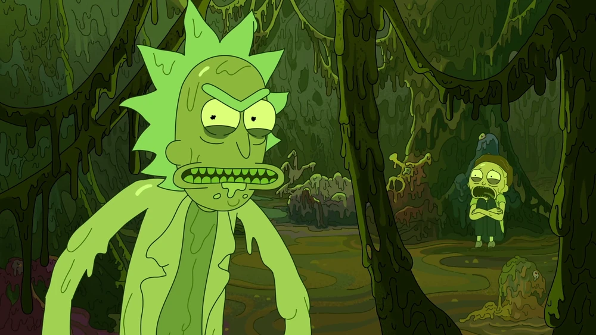
Depois de uma aventura estressante, Rick e Morty vão descansar em um spa, onde removem suas toxinas, as quais vão tomar a forma deles.
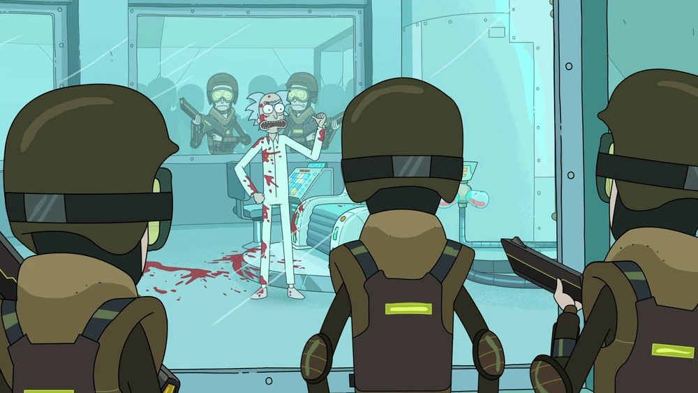
Enquanto Rick e Morty saem para aventurar-se na Atlântida, vamos dar uma olhada em como a Cidadela se reconstruiu desde que Rick e Morty a visitaram.
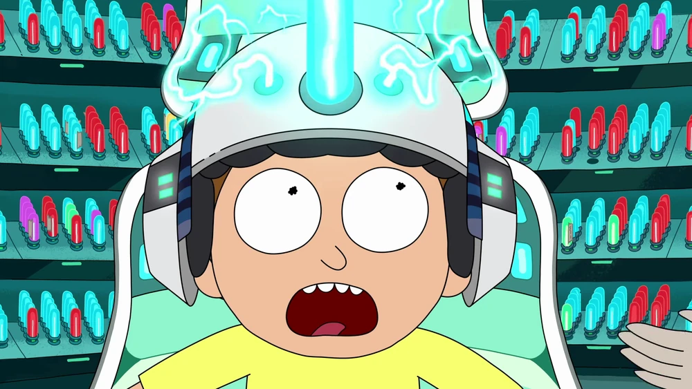
Rick mostra ao Morty seus "Pulverizadores de Mente", uma coleção de memórias que Morty pediu ao Rick para apagar de sua mente.
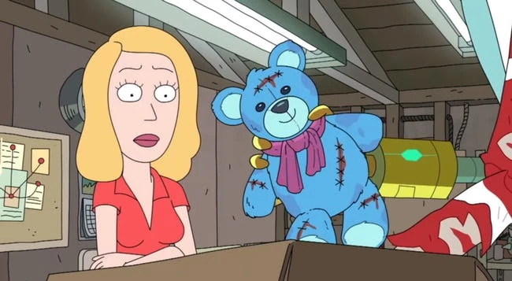
Rick traz Beth a um mundo que ele lhe criou quando ela era jovem, enquanto Beth procura um amigo de infância perdido há muito tempo, preso lá há anos.
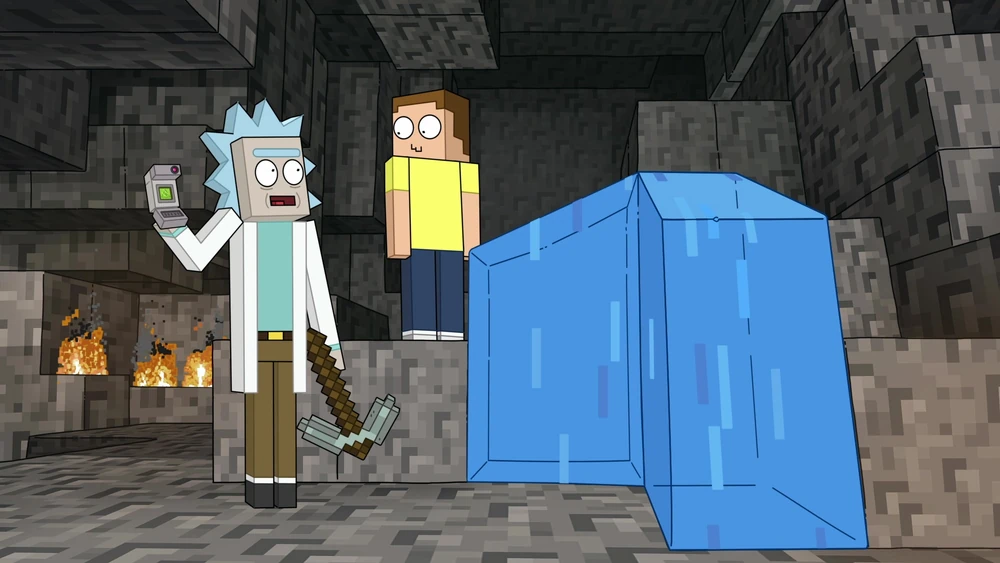
Rick e Morty são convocados pelo presidente para matar um alienígena perverso nos túneis secretos debaixo da Casa Branca.